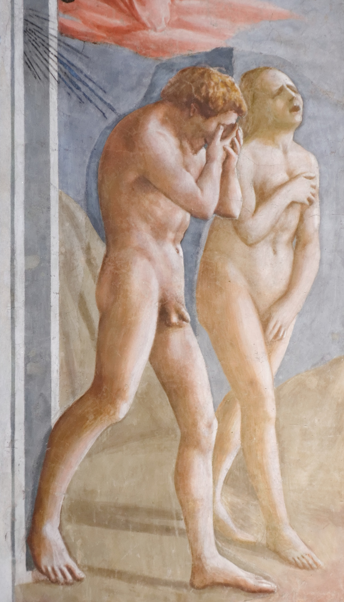

Génesis · Obra 02 de 47
La Expulsión del Paraíso
Masaccio (1427)


Realismo emocional crudo: Adán oculta su rostro por vergüenza ontológica y Eva echa la cabeza atrás en un alarido de dolor físico y culpa.
Lo que hace que destaque
Masaccio ejecutó con este fresco la ruptura definitiva con el estilo gótico internacional y el nacimiento del realismo psicológico renacentista. Tras probar el fruto prohibido, Adán y Eva son arrojados violentamente fuera del Edén por un ángel vindicativo vestido de rojo con espada desenvainada. Adán se cubre el rostro con ambas manos en un gesto de vergüenza ontológica; Eva se cubre el seno y el sexo imitando la pose clásica de la Venus Pudica mientras echa la cabeza atrás en un desgarrador alarido de dolor físico.
Contexto histórico
Durante la Contrarreforma en el siglo XVII, por orden del Gran Duque Cosme III de Médici, se añadieron hojas de higuera sobre los genitales de Adán y Eva por considerarlos impúdicos. Estas hojas taparon la obra durante más de tres siglos hasta la restauración magistral de 1988, que devolvió la desnudez trágica original de Masaccio y la luz que coincide exactamente con la ventana real de la capilla.
Biografía del artista
Masaccio (Tommaso di Ser Giovanni, 1401–1428) falleció trágicamente a los 26 años en Roma. A pesar de su corta vida, su dominio pionero de la perspectiva matemática y del volumen por claroscuro convirtieron a la Capilla Brancacci en la escuela donde aprendieron Leonardo da Vinci, Rafael y Miguel Ángel.
Otras vistas
